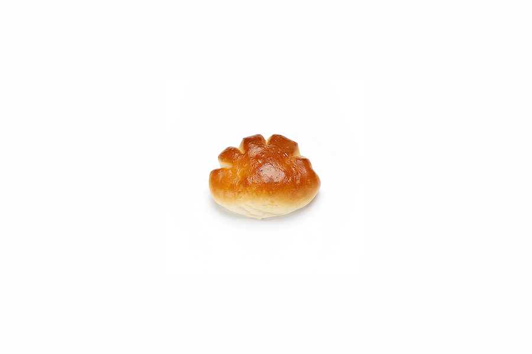

← back to projects
手がクリームパン

about
2020年よりSNSを通じた発掘から、バイラルヒットの創出、メジャー育成契約の締結に至るまで、約3年間にわたり一気通貫でプロデュースを担当。
-
発掘とコンセプト設計
TikTokで活動初期に発掘。
本人の高い制作力に、独自のデータ分析を掛け合わせ、毎日2曲以上のデモ投稿を軸とした高頻度な発信戦略を設計。
-
データドリブンなファン形成
ユーザーのコメントや関心層を徹底分析し、エンゲージメントの高いコンテンツを戦略的に投入。
リリース前に「熱狂的な待機層」を最大化させる仕組みを構築。
-
多角的なPRとUGC創出
弾き語りコンテンツのトレンドを捉えたUGC誘発策を展開。
さらに、男性ボーカルによるカバーを促進することでタッチポイントを広げ、楽曲の認知を全方位で拡大。
-
クリエイティブ・メディア運用
YouTubeチャンネルの立ち上げから、カバー動画の撮影・編集・運用まで自ら実務を牽引し、活動の幅を拡張。
-
機会創出とネクストステップ
オーディション番組出演やTVドラマタイアップの獲得、クリエイター起用企画の立案・監修を遂行。
最終的にメジャーレーベルとの育成契約締結までを導いた。
role
- A&R
- Creative Producer
- Designer